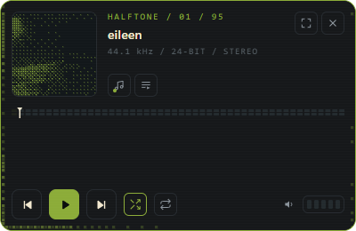
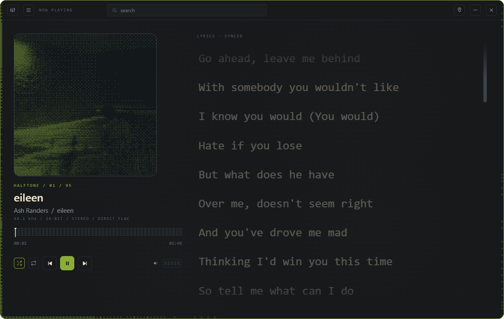
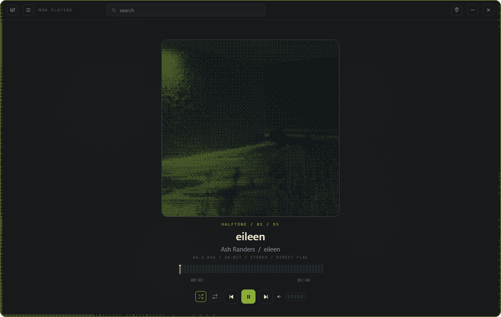
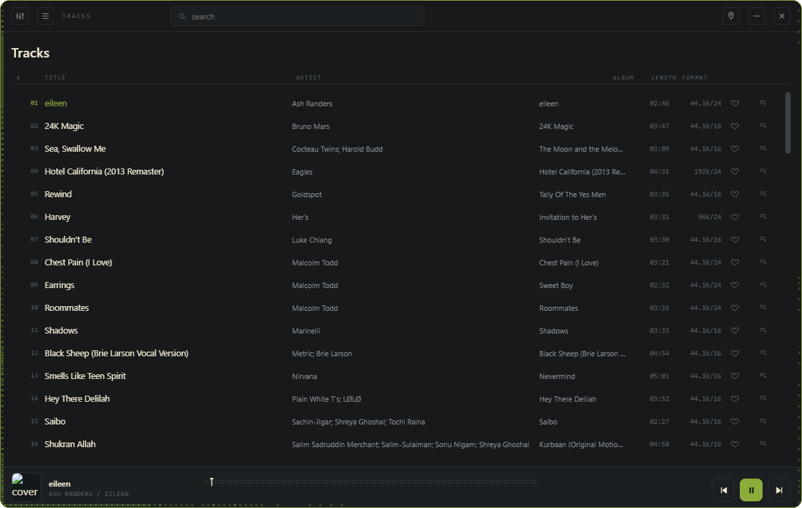
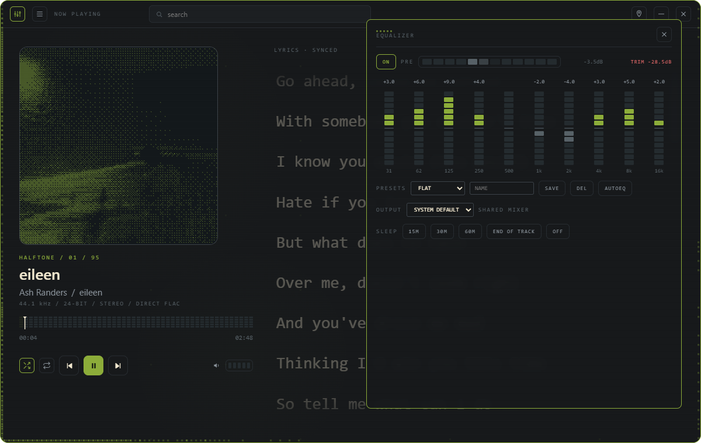

HALFTONE
YOUR MUSIC · DITHERED · LOCAL FLAC · NO CLOUD

THE WIDGET
Always-on-top · scroll for volume
synced lyrics · native right-click menu
SCALES 0.7× → 2.4×

NOW PLAYING
28px synced lyrics with follow
music-reactive ambient dither field
accent color extracted from the album art


CENTERED WHEN WORDLESS · FULL LIBRARY WHEN NOT
VIRTUALIZED LISTS · 50,000 TRACKS · INSTANT SEARCH

10-BAND EQ
AutoEQ import · ReplayGain
true bypass · output device picker
HALFTONE
github.com/TRAPSTON3/HALFTONE
MIT · free · local forever